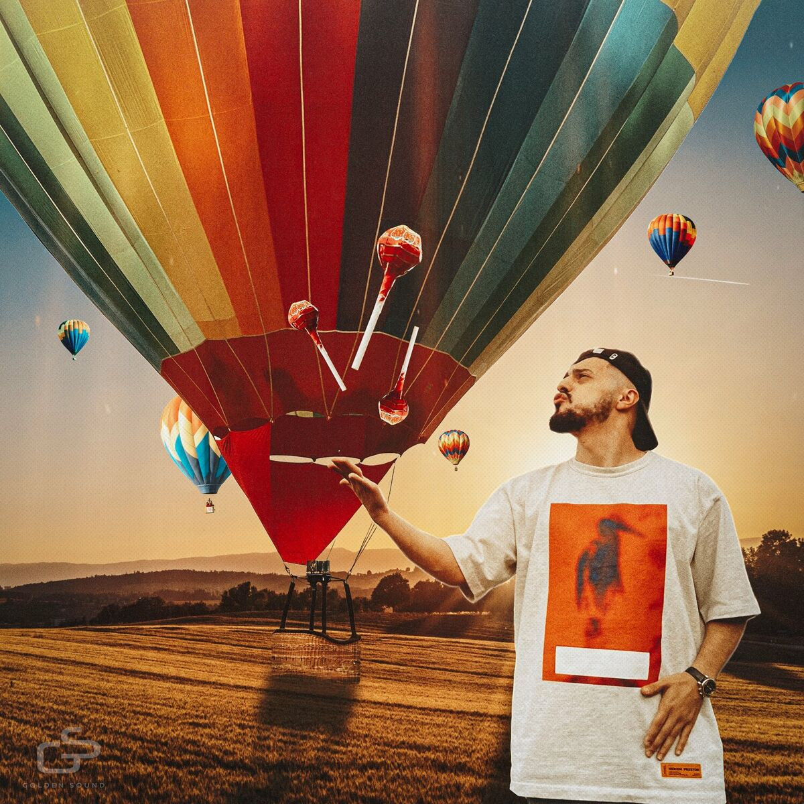

A.V.G. è un rapper e produttore russo noto per il suo mix di Hip Hop e Trap, arricchito da testi emotivi e un sound distintivo. Brani come Ножевой (Nozhevoi), С тобой (S toboi) e Один (Odin) lo hanno reso una figura emergente nella scena musicale. Nel 2022 ha pubblicato l'album Форс-мажоры (Fors-mazhory), che evidenzia la sua versatilità artistica. Ha collaborato con artisti come Jakone e MACAN, consolidando il suo successo. Attivo sui social e con una fanbase in crescita, A.V.G. si conferma uno degli artisti più promettenti della Trap russa.